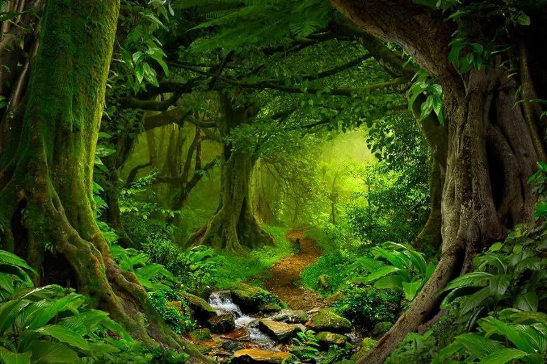

Welcome To Photography World

Photography is the art of capturing light with a camera, usually via a digital sensor or film, to create an image. With the right camera equipment, you can even photograph wavelengths of light invisible to the human eye, including UV, infrared, and radio.
The first permanent photograph was captured in 1826 (some sources say 1827) by Joseph Nicéphore Niépce in France. It shows the roof of a building lit by the sun.